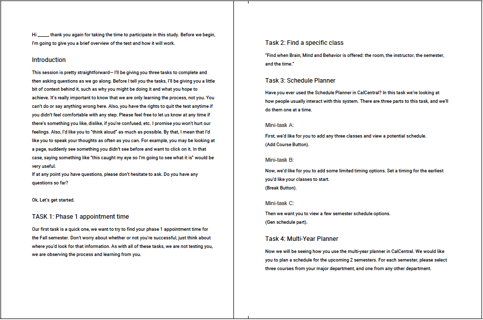
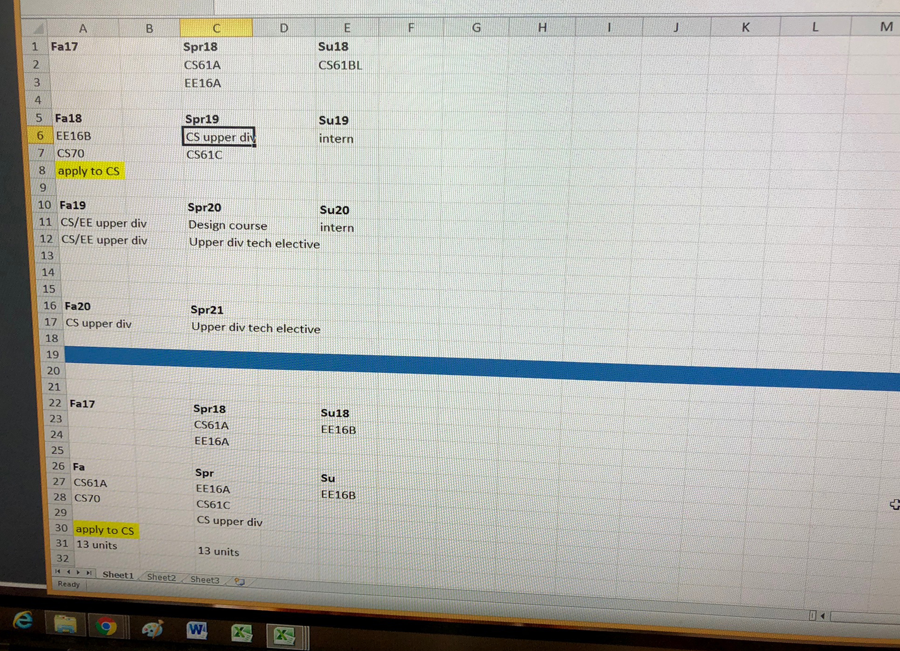
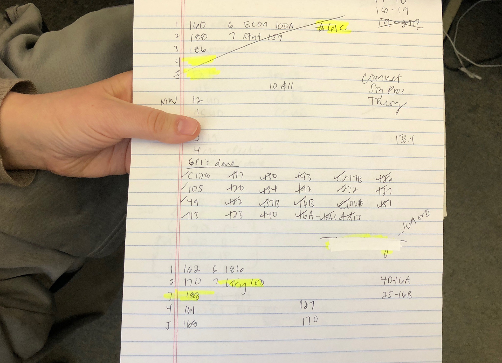
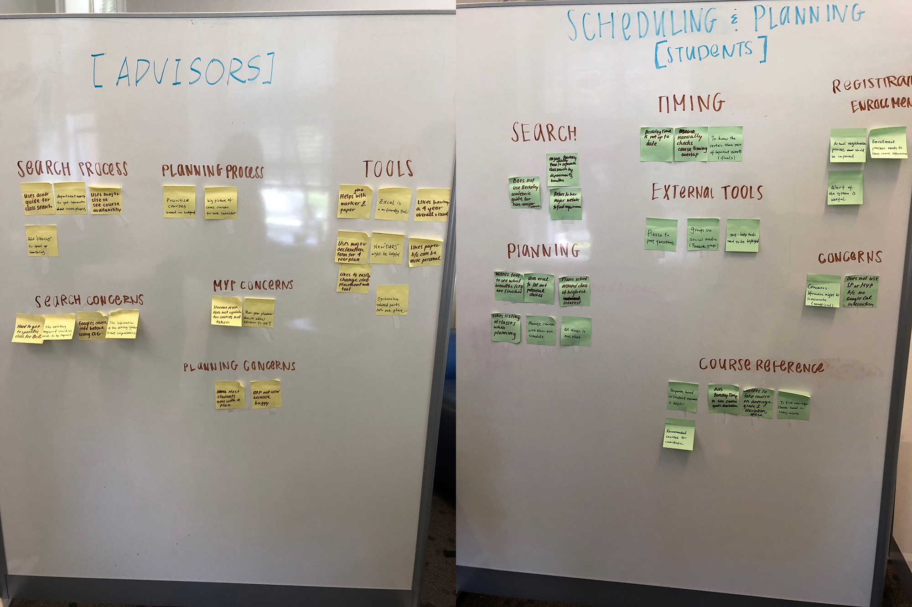
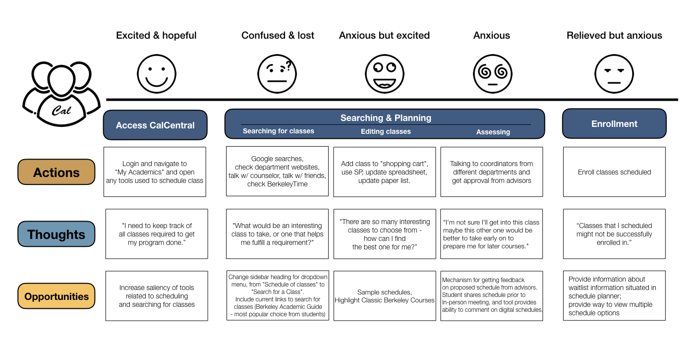

Background
The scheduling and planning tools play an important role in making students manage their courses and academic programs. Prior to this project, all of us had exposure to the scheduling and planning systems offered by UC Berkeley. In addition to our own pains with those systems, we heard that Cal students have had many frustrations with the existing scheduling and planning tools. Therefore, we decide to dig into Cal student concerns with planning and scheduling their courses
Team
Molly Nicolas, Shweta Patkar
Research Methods
Discount Usability Study + Survey + Contextual Inquiry + Cognitive Walkthrough + Paper Prototyping
Qian's Contribution
- Designed research process.
- Led uncovering insights with affinity diagram.
- Executed the project including survey, contextual inquiry, cognitive walkthrough, discount usability study, and paper prototyping.
- Crafted the user journey map.
Research Process
Objectives
- To gain a deeper understanding of how and why Cal students use the existing scheduling and planning systems and interfaces through conducting usability tests on the existing tools.
- To evaluate a potential redesign of the course scheduling and planning tools of the Calcentral portal by validating assumptions about Cal students experience of scheduling and planning courses.
Phase 1: Discount Usability Study
To gain a deeper understanding of Cal student’s course scheduling and planning behaviors, we needed to understand the role existing campus tools have on their experience. To do this, we recruited 3 UC Berkeley students for a one-hour discount usability study. From comments and thoughts shared by those participants, we gleaned common behavioral patterns as follows:
- Regardless of experience, all participants ran into usability issues - problems with the search interface, inability to find the tools they needed, and confusing layouts.
- All participants have solved frustrations with the system by generating their own tools: some used paper while others used excel spreadsheets.

The Script for Discount Usability Study
Phase 2: Survey
Based on the tools that participants reported in the discount usability study, a short survey was created to assess Cal student’s opinions on the usability of those tools and the likelihood to recommend. The responses were summarized into the following results:
- For the usability, Paper got the highest “easy to use” rating (3.1), followed by Spreadsheet (3), then Berkeleytime (2.78) out of 5.
- The Multi-Year Planner of the CalCentral Portal has been rarely used. Even for those who used this tool, their opinions went to the negative end - “Not easy at all” and “Not that easy”.
- For the likelihood to recommend, respondents were most likely to recommend classes.berkeley.edu, Berkeleytime, and the SchedulePlanner (2.95, 2.95, and 2.89 respectively).
Phase 3: Contextual Inquiry
As all students must meet with academic advisors when they plan and schedule courses, we thought that conducting contextual inquiries with both students and academic advisors would allow us to dig deeper into the course planning and scheduling processes actually happen.
Insights from academic advisors
- Different techniques (e.g., Excel spreadsheet, laminated paper and paper print-outs) had been developed to support students’ course planning and scheduling.
- Concerns that the available tools were not providing accurate information, since they were explicitly told by the system developer that the system (i.e., CalCentral) sometimes didn’t function properly.
- Ideal tools were described as Visual, Flexible, and Familiar.


Techniques Developed by Advisors
Insights from students
- The old system Berkeley Time was valued more than the existing Berkeley Academic Guide as the former system offered usable, legible and friendly course searching functions.
- Spreadsheets either with paper or Excel were used to restore and keep track of the course plans and schedules.
- Synchronized into personal Google calendar to ensure no overlapping between courses and other events.
Phase 4: Synthesizing With Affinity Diagram & User Journey Map
Based on the insights from the contextual inquiries, the affinity diagram was employed to further identify clusters and patterns. A bunch of common clusters was found between the student group and advisor group, which meant that both groups experienced some similar problems when they scheduled and planned courses with the current system.

Identify Clusters With Affinity Diagram
With the comprehensive insights synthesis, we mapped out a user journey to capture a holistic experience of Cal students during their interaction with the existing tools to schedule and plan their courses. Specifically, this user journey map documented student feelings, points and delights. Also, we created a layer - opportunity of the user journey map to generate ideas for the redesign and improvement.

Cal Student Journey of Planning & Scheduling Courses
Phase 5: Cognitive Walkthrough With Paper Prototyping
{kind=link}
{kind=link}